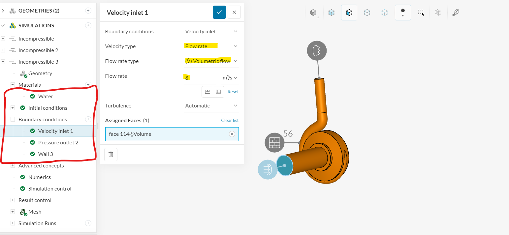
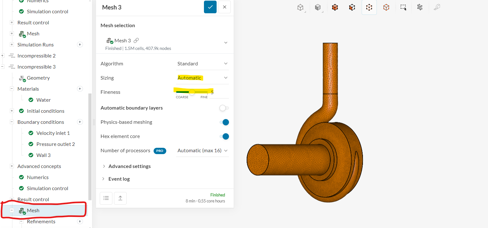
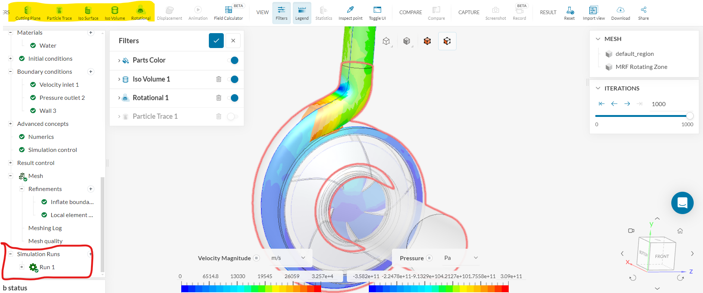

My Notes
Simulating a Centrifugal Pump Using SimScale
- Geometry Preparation: Create a detailed 3D model of the centrifugal pump using CAD software.
- Import Geometry to SimScale: Access the 'Geometries' tab in your SimScale project workspace to import the geometry.
- Mesh Generation: Define meshing parameters and access meshing tools under the 'Mesh Creator' tab.
- Simulation Setup: Specify boundary conditions and fluid properties:
- Inlet conditions: Set the inlet flow rate, temperature, and pressure according to the operational parameters.
- Outlet conditions: Specify the outlet pressure or mass flow rate.
- Material properties: Define the fluid properties of the working fluid (e.g., water) and select an appropriate turbulence model (e.g., k-omega SST).

Define Boundary Conditions - Boundary Conditions: Assign boundary conditions such as velocity inlet and pressure outlet to the pump geometry.
- Simulation Run: Initiate the simulation run by clicking the 'Start' button in the simulation setup interface.
- Result Analysis: Analyze pressure distribution, velocity contours, and efficiency based on the simulated data.
This was a simple project to understand the workings of Simscale, basically a simulation platform which lets you run simulations online through cloud technology. Below is a short description of the simulation procedure. This course is available at coursera for free and helps to learn to simulate fluid flow through various objects like pipe and pumps. It is relevant as the method and steps for the simulations are similar to what are required for pro softwares like Ansys Fluent.

Import Geometry and Set Meshing

Results (You can view different characteristics of the study based on filters)